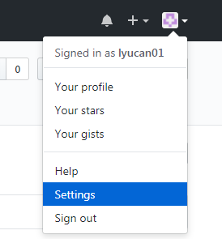

Git使用
centos下git安装
[root@lyucan ~]# yum -y install git
注册github（略）
添加github仓库
由于你的本地Git仓库和GitHub仓库之间的传输是通过SSH加密的，所以我们需要配置验证信息：
使用以下命令生成SSH Key：
[root@lyucan ~]# ssh-keygen -t rsa -C "youremail@example.com" ##这里写注册时候使用的邮箱地址
后面的 your_email@youremail.com 改为你在 github 上注册的邮箱，之后会要求确认路径和输入密码，我们这使用默认的一路回车就行。成功的话会在~/下生成.ssh文件夹，进去，打开 id_rsa.pub，复制里面的 key。
回到 github 上，进入 Account => Settings（账户配置）。

添加ssh key，将id_rsa.pub里面的全部内容粘贴到下面的Key中

添加完成后界面；

新建一个仓库，名字为learn（随便取）


检测是否添加成功
[root@lyucan ~]# ssh -T git@github.com
Hi lyucan01! You've successfully authenticated, but GitHub does not provide shell access.
在linux上添加远程仓库
设置username和email
[root@lyucan learn]# git config --global user.name lyucan01 ##注册时填的用户名
[root@lyucan learn]# git config --global user.email lyucan_1@163.com ##注册时填的邮箱
[root@lyucan ~]# mkdir -p /home/git/learn
[root@lyucan ~]# cd /home/git/learn/
[root@lyucan learn]# echo "For learn" > README.txt
[root@lyucan learn]# git init
Initialized empty Git repository in /home/git/learn/.git/
[root@lyucan learn]# ls -la
total 16
drwxr-xr-x. 3 root root 4096 Apr 19 20:26 .
drwxr-xr-x. 3 root root 4096 Apr 19 20:26 ..
drwxr-xr-x. 7 root root 4096 Apr 19 20:26 .git
-rw-r--r--. 1 root root 10 Apr 19 20:26 README.txt
[root@lyucan learn]# git add README.txt
[root@lyucan learn]# git status
# On branch master
#
# Initial commit
#
# Changes to be committed:
# (use "git rm --cached <file>..." to unstage)
#
# new file: README.txt
#
[root@lyucan learn]# git commit -m "First commit"
[master (root-commit) 0b311c2] First commit
1 file changed, 1 insertion(+)
create mode 100644 README.txt
[root@lyucan learn]# git remote add learn git@github.com:lyucan01/learn.git
[root@lyucan learn]# git remote -v
learn git@github.com:lyucan01/learn.git (fetch)
learn git@github.com:lyucan01/learn.git (push)
[root@lyucan learn]# git push -u learn master
Counting objects: 3, done.
Writing objects: 100% (3/3), 218 bytes | 0 bytes/s, done.
Total 3 (delta 0), reused 0 (delta 0)
To git@github.com:lyucan01/learn.git
* [new branch] master -> master
Branch master set up to track remote branch master from learn.

创建一个test文件上传到仓库
[root@lyucan learn]# pwd
/home/git/learn
[root@lyucan learn]# echo "test" > test
[root@lyucan learn]# git add test
[root@lyucan learn]# git status
# On branch master
# Changes to be committed:
# (use "git reset HEAD <file>..." to unstage)
#
# new file: test
#
[root@lyucan learn]# git commit -m "Add test"
[master 1a9e4d5] Add test
1 file changed, 1 insertion(+)
create mode 100644 test
[root@lyucan learn]# git push -u learn master
Counting objects: 4, done.
Delta compression using up to 4 threads.
Compressing objects: 100% (2/2), done.
Writing objects: 100% (3/3), 270 bytes | 0 bytes/s, done.
Total 3 (delta 0), reused 0 (delta 0)
To git@github.com:lyucan01/learn.git
bc5f2f2..1a9e4d5 master -> master
Branch master set up to track remote branch master from learn.

比较本地和远程仓库差异，进行本地文件的更新
在远程仓库修改test文件

[root@lyucan learn]# git fetch learn
remote: Counting objects: 3, done.
remote: Compressing objects: 100% (2/2), done.
remote: Total 3 (delta 0), reused 0 (delta 0), pack-reused 0
Unpacking objects: 100% (3/3), done.
1a9e4d5..b5b09d2 master -> learn/master
[root@lyucan learn]# git merge learn/master
Updating 1a9e4d5..b5b09d2
Fast-forward
test | 1 +
1 file changed, 1 insertion(+)
[root@lyucan learn]# cat test
test
Added from github
git clone
clone地址从这里获取

[root@mysql-master-1003306 git]# git clone https://github.com/lyucan01/learn.git
Cloning into 'learn'...
fatal: unable to access 'https://github.com/lyucan01/learn.git/': Peer reports incompatible or unsupported protocol version.
#报上述错误需要安装一下几个包
[root@mysql-master-1003306 git]# yum update -y nss curl libcurl
[root@mysql-master-1003306 git]# git clone https://github.com/lyucan01/learn.git
Cloning into 'learn'...
remote: Counting objects: 33, done.
remote: Compressing objects: 100% (26/26), done.
remote: Total 33 (delta 1), reused 28 (delta 0), pack-reused 0
Unpacking objects: 100% (33/33), done.
[root@mysql-master-1003306 git]# ls
learn